It has been a considerable amount of time since the concept of batteries was introduced. The initial batteries and the present state-of-the-art batteries have evolved in various aspects. However, one aspect that has remained unchanged is that all batteries still power applications used by humans in the same way. This newsletter aims to provide an understanding of the basics of battery-related issues. You might be wondering if batteries are so helpful and are aiding in combating climate change, then what is the problem? The answer lies within this newsletter. The biggest challenge that the entire globe is facing is, "What should be done with used batteries? How can they be recycled?"
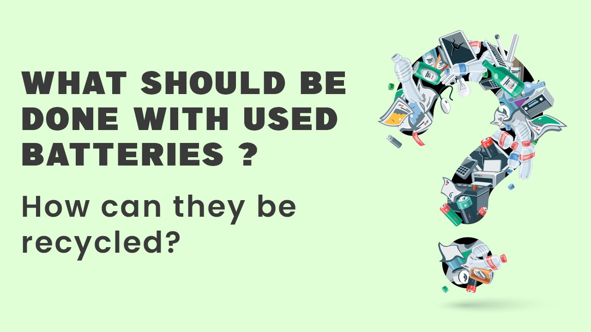
Batteries have become an integral part of our lives, and we are highly dependent on them. From the wristwatches we wear to the cars we drive; our gadgets and equipment rely on batteries. However, the root cause of the issue lies in what happens to batteries when they are used. Are they recycled? And if so, to what extent?
Do you know what challenges are involved in battery recycling? Battery recycling has become a significant aspect of developing new technologies that can facilitate the recycling of used batteries. Since batteries are made from elements such as cobalt, nickel, lithium, and others, these elements need to be extracted from ores. Some of these ores are found on the Earth's surface, while others are located deeper underground.
These elements are extracted and used to manufacture batteries. Therefore, every time new batteries are produced, the Earth's surface needs to be excavated to obtain the raw elements. This continuous extraction has a negative impact on the environment. To minimize the extraction and reduce the environmental impact, it is crucial to recycle these elements.
Advantages of Recycling:
Amid the challenges of battery waste, recycling is the only viable solution we can envision. Many arguments suggest various solutions for battery waste, but what actions are we taking? How many organizations have initiated campaigns to recycle their battery waste? Do all companies recognize the advantages of recycling? Here are some advantages that should encourage individuals to consider starting their own battery recycling plant alongside their battery manufacturing plant.
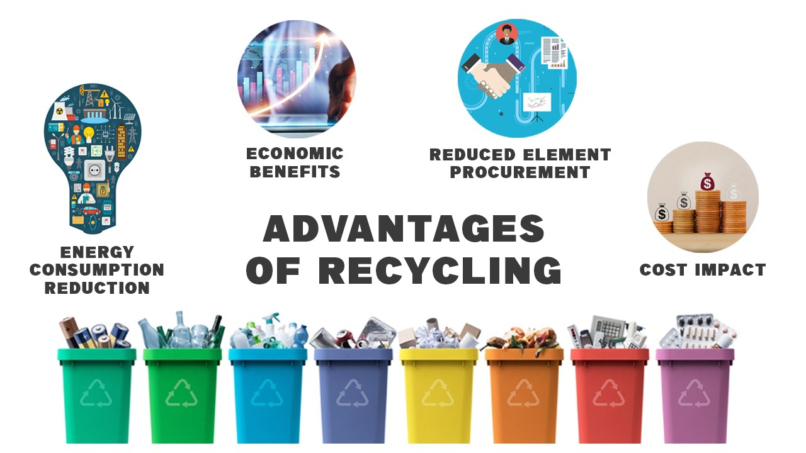
Cost Impact: The primary advantage that business owners consider is cost. Under this consideration, three major advantages can be highlighted:
Reduced element procurement: Recycled elements from dead batteries can be utilized in the production of new batteries.
Energy consumption reduction: Battery recycling helps save energy.
Economic benefits: The need for mining and refining elements is eliminated, resulting in cost savings.
Challenges for Recycling:
As with any action, there are challenges and negative aspects that make battery recycling a bit complex.
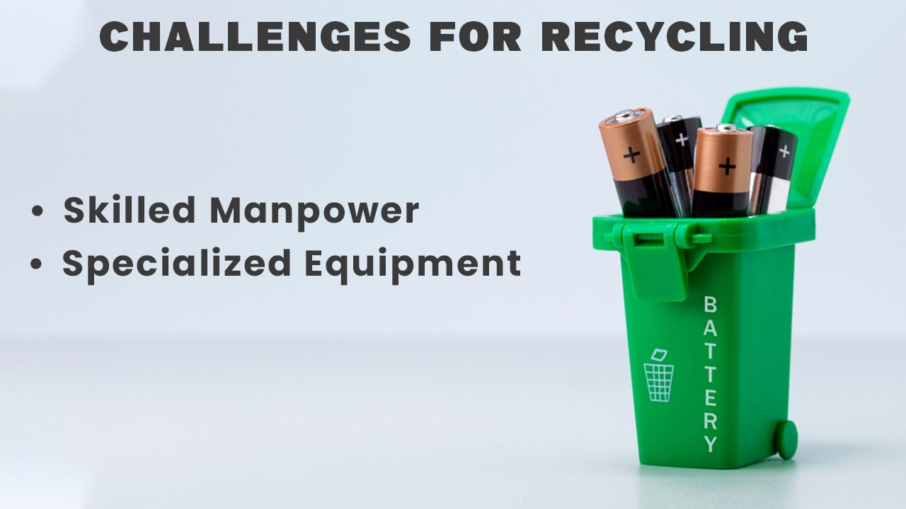
Skilled manpower: Using any technology requires skilled experts. Battery waste recycling is a delicate task involving chemical reactions that only experienced individuals can handle. Therefore, hiring professionals who can manage the process is crucial. There is an urgent need for skilled manpower to run battery recycling plants.
Specialized equipment: Every technology requires specific skills and expertise. Only skilled individuals can handle the intricate process of recycling, where machines identify potential recyclable materials and separate them from those that are not required. Separate instruments or machines are necessary to operate this process
Technology for Recycling:
Anticipating the widespread use of batteries, numerous battery recycling technologies have been introduced.
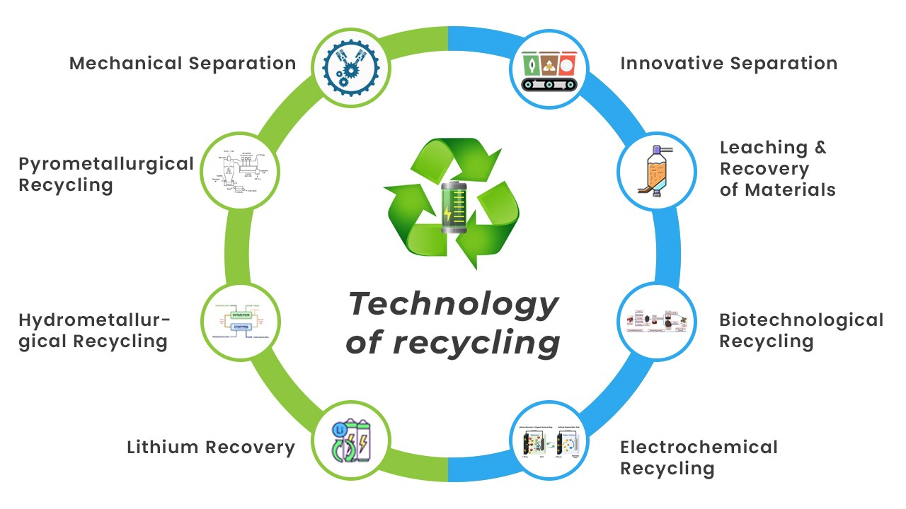
Mechanical Separation: This technology involves mechanical processes such as shredding, crushing, and sieving to separate different battery components. It facilitates the segregation of materials like plastic casings, metal foils, and electrode materials for further processing.
Pyrometallurgical Recycling: High temperatures are utilized in pyrometallurgical processes to break down batteries and recover valuable metals. Techniques like smelting and roasting are employed to separate metals from other battery components. These metals can then be refined and used in the production of new batteries or other applications.
Hydrometallurgical Recycling: Hydrometallurgical processes employ chemicals and aqueous solutions to dissolve and extract metals from batteries. Techniques like leaching and solvent extraction are employed to recover valuable metals such as cobalt, nickel, and lithium. These metals can be purified and reused in battery production.
Lithium Recovery: Specialized technologies have been developed for efficient lithium recovery, considering the increasing prevalence of lithium-ion batteries. Techniques like selective precipitation, ion exchange, and electrolysis are employed to extract lithium from battery components and convert it into high-purity lithium compounds.
Electrochemical Recycling: Electrochemical recycling methods utilize electrochemical processes to recover metals from batteries. Processes like electrowinning and electrorefining can be employed to separate and recover metals like copper, zinc, and lead from battery materials.
Biotechnological Recycling: Researchers are exploring biotechnological approaches to recover metals from batteries. Microorganisms or enzymes can selectively extract metals from battery materials through bioleaching or bioaccumulation processes.
Leaching and Recovery of Materials: Various leaching techniques, such as acid or alkaline leaching, are used to dissolve battery materials and separate valuable metals from other components. The dissolved metals can be recovered through precipitation, solvent extraction, or other separation methods.
Innovative Separation Technologies: Advancements in separation technologies, including magnetic separation, froth flotation, and gravity separation, are being explored for efficient and precise separation of battery materials based on their physical properties.
These technologies are continuously evolving and improving as the demand for battery recycling grows. Combining different techniques and developing innovative processes can enhance the efficiency, sustainability, and economic viability of battery recycling, contributing to the circular economy and resource conservation.
Regulations by Authorities:
In India, the recycling of batteries is governed by various regulations and guidelines set forth by authorities to ensure proper management and disposal. Here are some key regulations related to battery recycling in India:
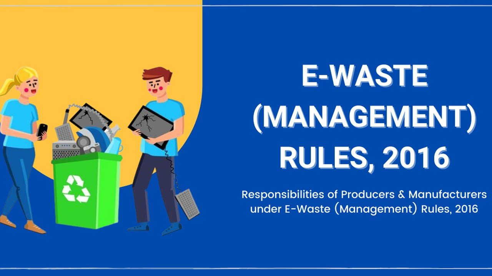
E-Waste (Management) Rules, 2016: Implemented by the Ministry of Environment, Forest, and Climate Change, these rules cover the management and handling of electronic waste, including batteries. They require the establishment of authorized collection centers, dismantlers, and recyclers for e-waste, and set standards for environmentally sound management.
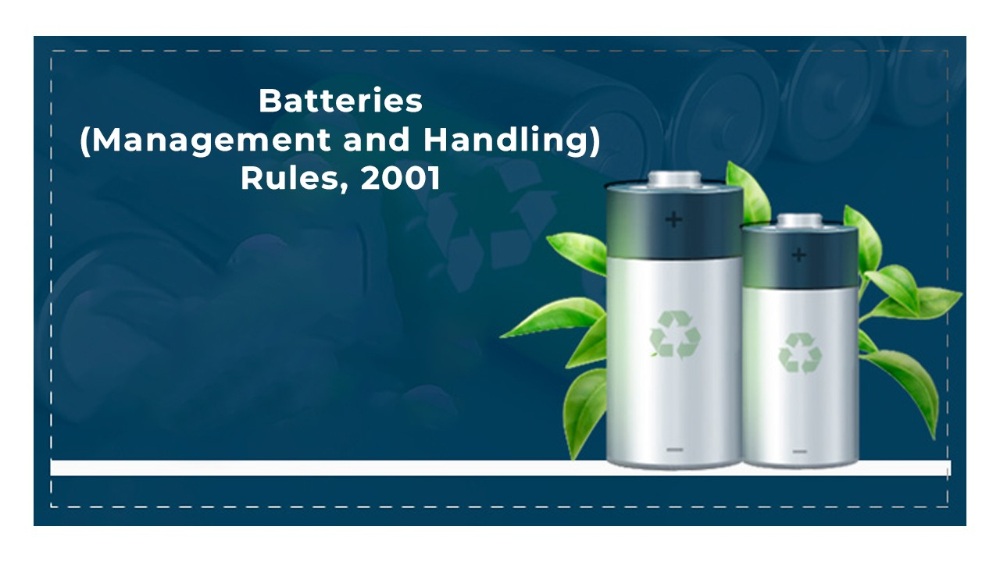
Batteries (Management and Handling) Rules, 2001: Established under the Environment Protection Act, 1986, these rules outline guidelines for the management, handling, and disposal of used batteries. They cover aspects such as battery labeling, collection, storage, transportation, and treatment, ensuring safe and environmentally friendly practices.
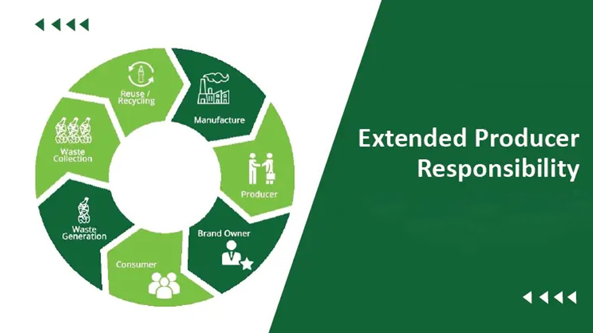
Extended Producer Responsibility (EPR): Applied to batteries in India, this concept holds battery manufacturers and importers accountable for managing and recycling batteries at the end of their life. They are required to set up collection systems, establish partnerships with authorized recyclers, and meet specified recycling targets.
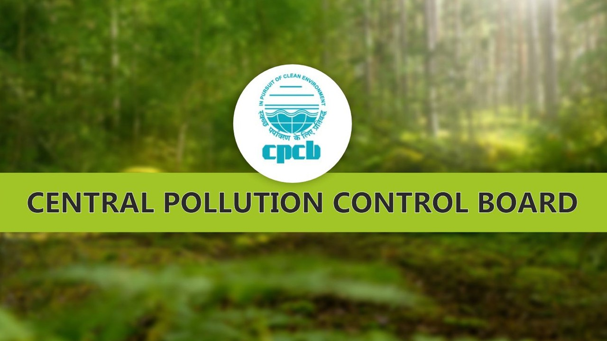
Central Pollution Control Board (CPCB) Guidelines: The CPCB has issued guidelines and regulations related to battery recycling, including the establishment and operation of battery recycling units. These guidelines outline procedures for obtaining necessary licenses and permissions, maintaining pollution control measures, and ensuring compliance with environmental standards.
State Pollution Control Boards (SPCBs): SPCBs enforce and monitor compliance with environmental regulations at the state level. They play a crucial role in ensuring battery recycling facilities adhere to prescribed guidelines and maintain appropriate pollution control measures.
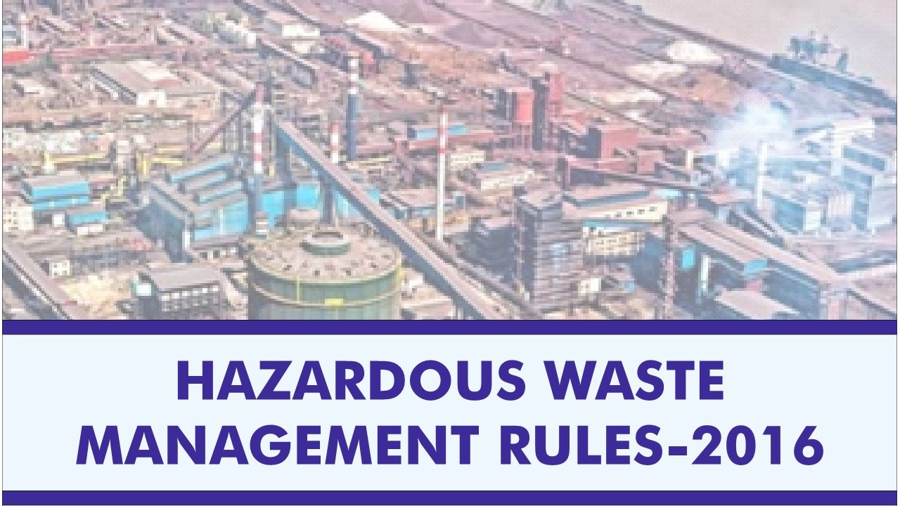
Hazardous Waste Management Rules, 2016: Formulated under the Environment Protection Act, 1986, these rules define requirements for the management and handling of hazardous waste, including hazardous components present in batteries. They cover waste categorization, collection, transportation, treatment, and disposal, aiming to minimize the environmental impact of hazardous waste, including batteries.
Compliance with these regulations and guidelines is crucial for battery manufacturers, importers, recyclers, and other stakeholders to ensure safe and sustainable battery recycling practices in India. Regular monitoring and enforcement by authorities promote responsible waste management and environmental protection.
International Cooperation
Governments worldwide have implemented various steps and initiatives to promote responsible battery recycling and waste management. Here are some notable examples:
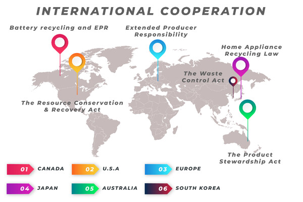
European Union (EU):
The EU Battery Directive establishes requirements for the collection, treatment, and recycling of batteries. It aims to minimize the environmental impact of batteries and promote resource efficiency. The EU also implements the Extended Producer Responsibility (EPR) principle, holding battery manufacturers and importers accountable for collection and recycling.
United States: The Resource Conservation and Recovery Act (RCRA) regulates the management and disposal of hazardous waste, including batteries. It sets standards for the handling, storage, transportation, and disposal of used batteries. Additionally, individual U.S. states have their own battery recycling programs and regulations.
Japan: The Law for the Recycling of Specified Kinds of Home Appliances, also known as the Home Appliance Recycling Law, promotes the collection and proper recycling of small household batteries.
Canada: Canadian provinces, such as British Columbia and Ontario, have implemented their own regulations for battery recycling and extended producer responsibility programs, making manufacturers responsible for collecting and recycling used batteries.
Australia: The Product Stewardship Act in Australia promotes responsible management of products, including batteries, throughout their lifecycle. It encourages manufacturers, importers, and retailers to take responsibility for collecting and recycling used batteries.
South Korea: The Waste Control Act in South Korea regulates the collection, treatment, and disposal of waste, including batteries. It sets requirements for proper management and recycling of used batteries to minimize environmental impact.
These examples demonstrate the commitment of governments internationally to responsible battery recycling and waste management.
Initiatives by the Indian Government:
The Indian government has recognized the importance of battery recycling and has taken several initiatives to promote responsible waste management. Key plans and actions include:
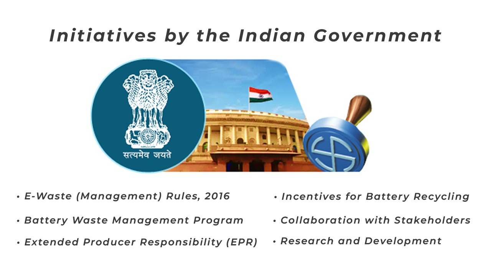
E-Waste (Management) Rules, 2016: These rules regulate the management and handling of electronic waste, including batteries. They provide guidelines for the collection, storage, transportation, and recycling of e-waste.
Battery Waste Management Program: The Central Pollution Control Board (CPCB) has proposed a comprehensive program to establish a sustainable system for the collection, storage, transportation, and recycling of used batteries. The program aims to ensure compliance with environmental standards.
Extended Producer Responsibility (EPR): The Indian government promotes EPR for batteries, making manufacturers and importers responsible for managing and recycling batteries at the end of their life cycle. This includes setting up collection centers and collaborating with authorized recyclers.
Incentives for Battery Recycling: The government provides incentives and subsidies to encourage battery recycling. Financial assistance is offered to companies for setting up recycling projects and establishing proper waste management infrastructure.
Collaboration with Stakeholders: The government collaborates with battery manufacturers, importers, recyclers, and state pollution control boards to establish an efficient and sustainable battery recycling ecosystem. This includes sharing best practices, conducting awareness campaigns, and ensuring proper waste disposal and recycling.
Research and Development: The government supports research and development efforts to explore innovative technologies and processes for efficient battery recycling. This includes research on safe recycling methods and recovery of valuable materials from batteries.
In conclusion, addressing battery waste requires global cooperation and comprehensive solutions that prioritize recycling and responsible waste management. By implementing effective strategies and collaborating with stakeholders, governments can minimize environmental impact, conserve resources, and promote a circular economy. The initiatives taken by the Indian government demonstrate their commitment to sustainable battery waste management.